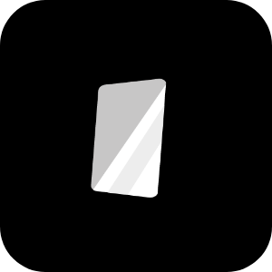

Magic Mirror

MagicMirror²
MagicMirror² is an open source modular smart mirror platform.
MMM-Admin-Interface
This module provides an interface to manage the magic mirror and edit the configuration from your web browser.
MMM-Globe
It displays a rotating globe constructed of Hexadecimal shapes.
MMM-GmailFeed
This module uses the gmail RSS feed instead of IMAP.
MMM-GoogleAssistant
MMM-GoogleAssistant is an embedded Google assistant on MagicMirror.
MMM-NetworkScanner
A module for MagicMirror which determines the status of devices on the network based on their MAC address.
MMM-NowPlayingOnSpotify
A module for the MagicMirror displaying the song currently playing on Spotify.
MMM-PiTemp
MMM-PiTemp works in conjunction with MagicMirror2 and tells you the temperature of your raspberry pi's CPU.
MMM-PlexNowPlaying
This module displays the list of playback sessions for a Plex Media Server.
MMM-Remote-Control
This module for the Magic Mirror² allows you to quickly shutdown your mirror through a web browser.
MMM-Remote-Control-Repository
Plugin for MMM-Remote-Control to update modules.json automatically.
MMM-Screencast
A module to cast to the MagicMirror². Currently, only YouTube casting is supported.
MMM-SmartTouch
A module for controlling your MagicMirror using a touchscreen interface project by SmartBuilds.io
MMM-WiFiPassword
Magic Mirror Module that displays your WiFi Network, Password, and QRCode so people who visit your house/business can connect easier.